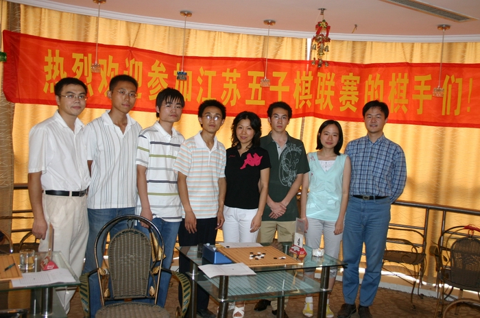
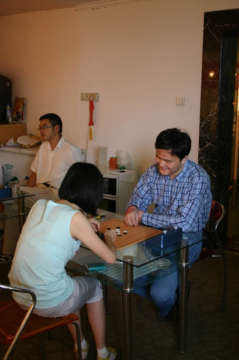

江苏联赛第一轮战罢
#1 江苏联赛第一轮战罢 作者：小丸.net 发表时间：2008-7-19 15:12:30
经过半个月的筹备，江苏五子棋联赛今天下午１２：３０在江阴清风车旅茶吧开打．

参加本次比赛的棋手有来自江阴的本地棋手张亮，康岩，无锡的杨彬，王春鸣，还有来自苏州的傅亮，郑勇，陈靖以及南京的王烨林．
第一轮战罢，最后陈靖和郑勇完胜，王烨林在最后４０秒捡杨彬四三不挡之漏反败为胜，傅亮因对手没来先得一分．

本次比赛由来自苏州的EvaＭＭ执裁．
本次比赛采用中国棋院发布的规则，执行三手交换，五手两打，执行PASS权，每方７５分钟不读秒．
#2 Re:江苏联赛第一轮战罢 作者：百医天使 发表时间：2008-7-19 15:36:28
谱呢，我想看看妹妹是怎么反败为胜的
#3 Re:江苏联赛第一轮战罢 作者：南京小飞机 发表时间：2008-7-19 16:22:45
我也想去玩……#4 Re:江苏联赛第一轮战罢 作者：百医天使 发表时间：2008-7-19 21:55:56
丸子，你把一样话发几次做什么，让有志把你的一样的东西删除掉，还有，下午和晚上的结果能出来了吧
#5 Re:江苏联赛第一轮战罢 作者：百医天使 发表时间：2008-7-19 22:07:11
傅亮因对手没来先得一分．
大亮先得了个便宜，
不过我想陈靖会是最后的冠军，不知道对不
#6 Re:江苏联赛第一轮战罢 作者：南京小飞机 发表时间：2008-7-20 8:22:39
康老板,把第一张照片上面的人名写下来认识认识啊
#7 Re:江苏联赛第一轮战罢 作者：南京小飞机 发表时间：2008-7-20 8:36:23
康老板第2轮的情况呢?昨晚不会喝酒忘了吧?
#8 Re:江苏联赛第一轮战罢 作者：百医天使 发表时间：2008-7-20 10:14:22
三轮下来，狮子3分，郑勇轮空一轮2分，大亮2.5分，杨斌1分，道道2分，王春鸣0.5
丸子保持不胜厄，
#11 Re:江苏联赛第一轮战罢 作者：南京小飞机 发表时间：2008-7-20 14:22:47

#12 Re:Re:江苏联赛第一轮战罢 作者：南京杨帆 发表时间：2008-7-20 19:00:49
呵呵，还是我们南京的MM第一啊，呵呵。南京小飞机是哪个啊？#13 Re:江苏联赛第一轮战罢 作者：yidefei 发表时间：2008-7-20 22:53:55
有这样的活动很不容易哪，为江苏的五子棋发展起着重要的作用！
#14 Re:江苏联赛第一轮战罢 作者：17号蓝星仔 发表时间：2008-7-22 14:47:56
 支持亮亮一个
支持亮亮一个
#15 Re:Re:江苏联赛第一轮战罢 作者：罗马王子 发表时间：2008-7-22 15:05:59
引用：
原文由 17号蓝星仔 发表于 2008-7-22 14:47:56 :
 哈哈，多谢！是星仔吧？
哈哈，多谢！是星仔吧？